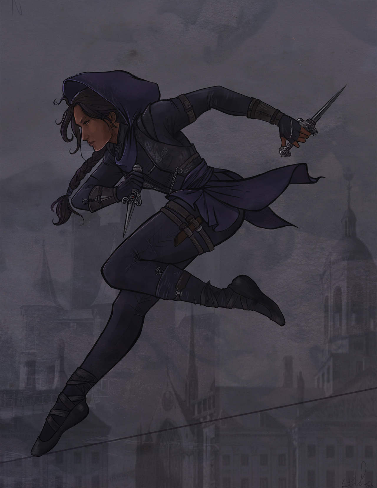
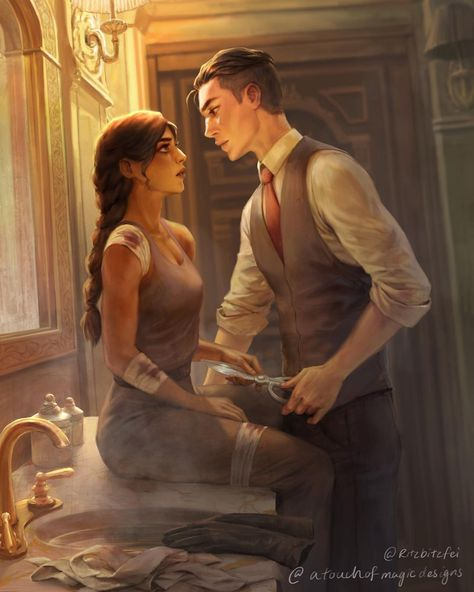
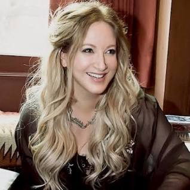

My name is Ananya. I live in U.S. I am currently in 8th grade. I love to read. I read mostly fiction books. I am not that interested in non-fiction books, but once in a while I do pick up a biology book or two. I am a big book worm. In fiction my favorite genres are romance, mystery, fantasy, and realistic fiction. My favorite book is Six of Crows. In Six of Crows my favorite charecter is Inej.
As I said I love Inej from Six of Crows. Six of Crows is basically a book where 6 dangerous criminals attempt to make the biggest loot in history by capturing a wanted man. Inej is one of these six criminals. She has a hard past and is know as the wraith. She is a spy who works for a dangerous boy named Kaz. She has intricate relationship with Kaz that is also very interesting. I like her so much because she pushes forward no matter what, and her skill of being invisble is beyond words.
 Click here to view one of my favorite books.My inspiration is Leigh Bardugo. She is also the author of Six of Crows.
